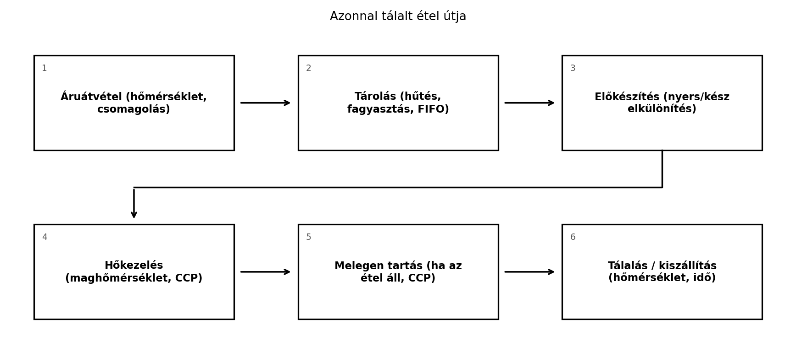
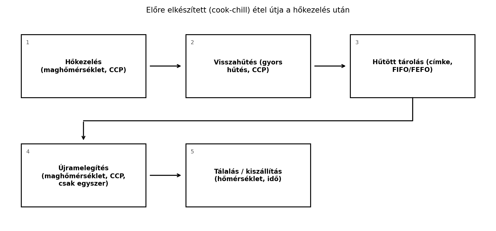

Reggel van. A szállító hozza a hűtött csirkemellet, a tejet és a friss zöldséget. A raktáros siet, alig néz a ládákra, a hűtött árut beteszi a hűtőbe. Délben a séf maghőmérőt szúr a sült csirkemellbe, de csak 62 °C-ot mutat. Visszateszi sülni, de nem írja be a naplóba. Délután visszahűtés helyett a maradék pörköltet forrón, nagy fazékban teszik a hűtőbe. Másnap vendégek panaszkodnak hasfájásra.
Ilyenkor szokták mondani, hogy „valahol elcsúszott a HACCP”. De a HACCP nem papírmunka, hanem az étel útjának tudatos felügyelete. Ebben az alfejezetben azt tanuljuk meg, hogyan kövesd végig az étel útját az átvételtől a tálalásig, hol vannak a kritikus szabályozási pontok, és mit kell mérned, naplóznod, javítanod.
Az étel útja kétféle lehet. Ha az ételt elkészítés után azonnal tálaljuk vagy melegen tartjuk, az út rövid (első ábra). Ha előre, más napra vagy rendezvényre főzünk (hűtött ételkészítés, cook-chill), a hőkezelés után visszahűtés, hűtött tárolás és tálalás előtti újramelegítés következik (második ábra). A kettőt nem szabad egy láncba fűzni: az azonnal tálalt ételt nem hűtjük vissza, a visszahűtött ételt pedig csak egyszer melegítjük újra.


Mindkét úton a HACCP-rendszer célja, hogy a legnagyobb élelmiszer-biztonsági veszélyeket olyan pontokra összpontosítsa, ahol azokat meg lehet szüntetni vagy elfogadható szintre lehet csökkenteni.
Definíció. Kritikus szabályozási pont (Critical Control Point, CCP) az a lépés, ahol a megfigyelés és szabályozás alkalmazása elengedhetetlen ahhoz, hogy egy azonosított élelmiszer-biztonsági veszélyt megelőzzünk, megszüntessünk vagy elfogadható szintre csökkentsünk.
A CCP nem minden konyhai lépés. Például a beszerzés fontos ellenőrző pont lehet, de ha a beszállítónál és a hűtőben is betartják a hidegláncot, és a hőkezelés később elpusztítja a kórokozókat, akkor az átvétel nem mindig CCP. Az előkészítésnél a keresztszennyeződés súlyos, de általában a személyi és üzemi higiénia, valamint a nyers–kész elkülönítés előfeltételi programjával szabályozzuk, nem pedig folyamatos méréssel.
Összefüggés. Egy igazi CCP-nél mindig van:
Jogszabály. Az 852/2004/EK rendelet szerint a vendéglátó üzemek a HACCP-elveken alapuló eljárásokat kötelesek alkalmazni. A részletes higiéniai határértékeket és a jó gyakorlatot a NÉBIH útmutatói és az üzem saját HACCP-terve tartalmazzák (ellenőrizendő: NÉBIH-útmutató, hatályos rendelet, üzemi HACCP-terv). A pontos paragrafusszámot, hőmérsékletet és időt a kiadás előtt ellenőrizni kell.
Az átvételnél a legfontosabb ellenőrzési pontok:
Higiénia. Hűtött termék átvételekor a termékcsoportonkénti határ érvényes: darált hús legfeljebb 2 °C, belsőség 3 °C, baromfi 4 °C, friss hal 0–2 °C, vágóállat-hús 7 °C, egyéb hűtött áru 5 °C; a gyártó ennél alacsonyabbat is előírhat. A részletes táblát lásd a Az élelmiszerek kiválasztása, átvétele és minőségellenőrzése alfejezetben. Fagyasztott terméknél -18 °C vagy hidegebb a jellemző. (Tanulási értékek, ellenőrizendő: NÉBIH-útmutató, üzemi HACCP-terv, gyártói adatlap.) Fontos: ezek tanulási értékek, a munkaterületed HACCP-terve lehet szigorúbb.
Helyes gyakorlat. Ha a hűtött csirke 8 °C-os, ne tedd a hűtőbe „majd lehűl”. A hideglánc megszakadt. Ha a beszállító nem ad biztonsági garanciát, különítsd el olyan helyre, ahol nem szennyezhet más élelmiszert, és jelezd a konyhafőnöknek. Ha a hőmérséklet erősen túllépi a határt, a szállítmányt vissza kell utasítani vagy selejtezni. A döntést írd az átvételi naplóba.
A tárolásnál három nagy terület van: hűtött, fagyasztott és szárazáru.
Hűtött tárolás.
A bal oldali hűtőben az 1–5. polc a fenti sorrendet mutatja: felül fedett, címkézett kész étel (1), alatta tejtermék (2), tojás (3), zöldség (4), legalul a nyers hús és a nyers baromfi külön, zárt, peremes edényben (5); a hőmérő (6) a tanulási tartományt mutatja, a régebbi áru elöl van (7), és a polcokon marad hely a hideg levegőnek (8). A jobb oldali hűtőben az A–G betűk a hibákat jelölik.
A legsúlyosabb hiba az A: a felül tárolt nyers csirke leve a kész tortára csöpög, és a tortát már nem hőkezeljük. Ellenőrzéskor tehát először azt nézd meg, van-e nyers hús kész étel fölött. A HTML-kiadásban a számokra vagy betűkre mutatva az adott tárgy kiemelődik, és megjelenik a szabály vagy a hiba magyarázata.
Fagyasztott tárolás.
FIFO és FEFO.
A konyhai belső címke öt mezője: (1) megnevezés, (2) a készítés vagy felbontás dátuma és időpontja, (3) a fogyaszthatósági idő, (4) az allergének, (5) a készítő monogramja. A fogyaszthatósági időt nem érzésre írod be: az üzemi HACCP-terv adja meg, meddig használható az adott étel (ellenőrizendő: HACCP-terv). A polcon a hamarabb lejáró doboz áll elöl; az újonnan érkezett árut hátra teszed.
A tipikus hiba a (b) rész jobb oldalán látszik: az új dobozokat elé tették, a lejárt doboz hátul rekedt, és ott „eltűnik”. A HTML-kiadásban egy üres címkét is kitölthetsz; az Ellenőrzés gomb jelzi, ha egy mező hiányzik, vagy ha a fogyaszthatósági idő korábbi a készítésnél.
Szárazáru.
Kritikus pont. Hűtött tárolás. A veszély a kórokozók szaporodása. A kritikus határ a hűtő belső hőmérséklete: legfeljebb +5 °C (ellenőrizendő: üzemi HACCP-terv). A felügyelet módja napi legalább kétszeri hőmérővel mérés és a polcok szemrevételezése. Helyesbítő tevékenység: ha a hűtő meleg, az élelmiszert át kell helyezni, a hibát javítani, a hőmérsékletet dokumentálni, és ellenőrizni, mi mennyi ideig volt meleg. A dokumentálás a hűtőnapló.
Az előkészítés legnagyobb kockázata a keresztszennyeződés. A nyers húsról, baromfiról, tojásról kórokozók kerülhetnek a kész ételbe.
Szabály.
Eljárás. Az előkészítés gyakran nem CCP, mert nincs olyan mérhető lépés, amely a kórokozót elpusztítaná. A keresztszennyeződést a következetes elkülönítés, a kézmosás és a tisztítás előfeltételi programja akadályozza. De ha az étel nyers marad (például tatár beefsteak vagy hideg saláta), az előkészítés higiénéje egyértelműen kritikus.
A hőkezelés a legfontosabb CCP, mert a megfelelő hőmérséklet és idő elpusztítja a veszélyes kórokozók nagy részét.
Kritikus pont. Hőkezelés. A veszély a kórokozó mikroorganizmusok túlélése. A kritikus határ: a hús, baromfi, hal vagy étel maghőmérséklete a vastagabb részben legalább 75 °C baromfinál, darált húsnál, belsőségnél, sertés- és vadhúsnál; a marha-/borjúhús és a hal értékét a fejezet technológiája adja, de a könyv a Tanulási referenciaértékek táblában egységesen nevezi meg (ellenőrizendő: NÉBIH-útmutató / hatályos rendelet / HACCP-terv). A felügyelet módja: tisztított, fertőtlenített digitális maghőmérővel, minden adagnál, a legvastagabb ponton; a hőmérőt kalibrálni kell. Helyesbítő tevékenység: ha nem éri el a határt, további hőkezelés, majd újra mérés. Dokumentálás: hőkezelési napló, a CCP-mérési lap.
Figyelem. A maghőmérőt minden mérés előtt és után tisztítsd, fertőtlenítsd, különben magad viszed be a kórokozót a hús belsejébe. A hőmérő hegye a vastagabb részbe kerüljön, ne csontba.
A hőkezelt étel, ha nem azonnal tálaljuk, a veszélyes zónában lassan hűlve kitűnő táptalaj a spórák és a túlélő baktériumok számára. Ezért a visszahűtés CCP.
Kritikus pont. Visszahűtés. A veszély: a hőkezelt ételben túlélő spórák kicsírázása és a szaporodó baktériumok toxinja. A kritikus határ: a főzés végétől 2 órán belül 20 °C alá, további 4 órán belül 5 °C alá (összesen legfeljebb 6 óra; tanulási érték, ellenőrizendő: NÉBIH-útmutató / hatályos rendelet / HACCP-terv). Az üzemi HACCP-terv szigorúbb is lehet (például cook-chill rendszerben, lásd a Konfitálás, cook-chill és mikrohullámú regenerálás és a Sous-vide és alacsony hőmérsékletű hőkezelés alfejezetet). A felügyelet módja: maghőmérő a hűlő étel legvastagabb részén, időzítő, adott esetben sokkoló. Helyesbítő tevékenység: ha az étel túl lassan hűl, azonnal sokkolóba, jégfürdőbe, sekély edénybe, kevergetéses hűtésbe kell tenni; ha a határt túllépték, az ételt zárolni és selejtezni kell; „még úgyis újramelegítjük” nem helyesbítés, mert a hőtűrő toxint (pl. Bacillus cereus, Staphylococcus aureus) az újramelegítés nem feltétlenül semmisíti meg (ellenőrizendő: NÉBIH-útmutató / HACCP-terv). Dokumentálás: hűtési napló.
Számítás. A hűtési sebesség ellenőrzéséhez oszd el a hőmérséklet-változást az eltelt idővel.
Példa: A pörkölt maghőmérséklete a főzés végén 85 °C; az órát a főzés végétől számoljuk. A CCP-határ szerint 2 órán belül 20 °C alá kell hűteni, további 4 órán belül 5 °C alá. Mennyi a szükséges átlagos hűlési sebesség az első és a második szakaszban?
A második szakaszban a 20 °C-ról 5 °C-ra hűléshez átlagos sebesség elég. Ellenőrzés. Ha a pörkölt percenként átlagosan 0,54 °C-kal hűl, 120 perc alatt valóban 65 °C-ot csökken, így 85 °C-ról 20 °C-ra ér. Ez átlagos sebesség; a gyakorlatban az eleje gyorsabb, a vége lassabb.
A gyors lehűtés gyakorlati eszközei: sokkoló, jégfürdő, sekély fémtál, időnkénti keverés, a fazék hideg vízbe állítása. A forró, nagy tömegű edényt tilos közvetlenül a hűtőbe zsúfolni, mert felmelegíti a hűtőt, és a többi élelmiszert is veszélybe sodorja.
Az ábra három, képletből számolt lehűlési görbét mutat ugyanarra a 85 °C-os ételre; az időt a főzés végétől méri, a sraffozott tilos tartomány a fenti kétlépcsős szabály: 2 óra után 20 °C fölött, 6 óra után 5 °C fölött (ellenőrizendő: NÉBIH-útmutató / hatályos rendelet / HACCP-terv). A sokkolóban, sekély edényben hűtött és a jégfürdőben kevergetett étel a 2 órás ponton már 20 °C alatt van, a hűtőbe tett 15 literes fazék viszont ekkor még 40 °C fölött jár, tehát a tilos tartományba ér.
A görbe nem mérés: a valódi hűlést mindig maghőmérővel, a hűtési naplóban ellenőrizd (ellenőrizendő: határértékek a NÉBIH-útmutató és a HACCP-terv szerint). A HTML-kiadásban beállíthatod a kezdő hőmérsékletet, az edényt és a hűtési módot; a kalkulátor kiírja, mennyi idő alatt ér az étel a főzés végétől 20 °C és 5 °C alá, megfelel-e a kétlépcsős tanulási szabálynak, és mekkora a fenti képlettel számolt átlagos hűlési sebesség az első szakaszban.
A kész ételt tálalás előtt melegen tartóban, ételmelegítőben tartják. A melegen tartás CCP, ha az étel hosszabb ideig áll.
Kritikus pont. Melegen tartás. A veszély a kórokozók szaporodása. A kritikus határ: az étel maghőmérséklete legalább 63 °C, és a melegen tartás időtartama legfeljebb 2 óra (ellenőrizendő: NÉBIH-útmutató / hatályos rendelet / HACCP-terv). A felügyelet módja: hőmérő a legvastagabb részben, 30 percenként, keverés. Helyesbítő tevékenység: ha 63 °C alá esik, az ételt zárolni és selejtezni kell (nem „menthető” azonnali felhasználással vagy újraforralással, és nem szabad úgy „pótolni”, hogy újra és újra felfűtjük). Dokumentálás: melegentartó hőmérsékleti napló.
Hideg ételeknél, salátáknál, hidegtálaknál a hidegen tartás CCP. A hideg étel 5 °C alatt maradjon. A tálaló pult hideg hűtőbordáját is ellenőrizni kell. A hidegen tartott ételnél a szabály hasonló: ne töltsön hosszú időt a veszélyes zónában.
A visszahűtött ételt újramelegítjük. Ez csak egyszer történjen meg.
Kritikus pont. Újramelegítés. A veszély: a visszahűtés során túlélő vagy bekerülő kórokozók túlélése, valamint a spórák kicsírázása. A kritikus határ: a hűtött étel maghőmérséklete a vastagabb részben legalább 75 °C, gyorsan, legfeljebb 2 órán belül (ellenőrizendő: üzemi HACCP-terv). A felügyelet módja: maghőmérő, időzítő. Helyesbítő tevékenység: ha nem éri el, tovább melegíteni; ha a hosszú melegen tartás miatt gyanús, selejtezni. Dokumentálás: újramelegítési napló.
Tilos. A hűtött, már egyszer újramelegített ételt újra lehűteni és újra melegíteni. Az ilyen ételt a vendéglátó gyakorlatban meg kell semmisíteni, vagy a saját HACCP-terv szerint kell eljárni.
A tálalás során a fő kockázat a keresztszennyeződés és a hőmérséklet betartása.
Kritikus pont. Kiszállítás. A veszély: a hőmérséklet kiesése és keresztszennyeződés. A kritikus határ: meleg étel legalább 63 °C, hideg étel legfeljebb 5 °C a szállítás végéig (ellenőrizendő: üzemi HACCP-terv). A felügyelet módja: induláskor és érkezéskor hőmérővel mérés. Helyesbítő tevékenység: ha a hőmérséklet nem megfelelő, az ételt nem szabad kiszolgálni. Dokumentálás: szállítási napló.
A maradék kétféle lehet:
Szabály. A maradékot mindig zárt edényben, címkével, dátummal tárold. A címkén legyen az étel neve, a készítés dátuma, a visszahűtés időpontja, a felhasználhatósági idő, és az allergének.
A könyv minden fejezete ugyanazokat a tanulási értékeket használja (a teljes tábla a könyv szerkesztési szerződésében van); az üzemben a saját HACCP-terv a mérvadó (ellenőrizendő: NÉBIH-útmutató / hatályos rendelet / HACCP-terv).
| Mutató | Tanulási érték |
|---|---|
| Hidegen tartás | legfeljebb 5 °C (hűtőtér 0–5 °C; szigorúbb üzemi szabály: 4 °C) |
| Melegen tartás | legalább 63 °C, legfeljebb 2 óra |
| Maghőmérséklet | baromfi, darált hús, belsőség, sertés, vad: legalább 75 °C |
| Visszahűtés | főzés végétől 2 órán belül 20 °C alá, további 4 órán belül 5 °C alá (összesen legfeljebb 6 óra) |
| Újramelegítés | legalább 75 °C maghőmérséklet, csak egyszer |
| Határtúllépés | zárolás, selejtezés; azonnali felhasználás vagy újraforralás nem helyesbítés |
A konyhai HACCP-tervben a következő áttekintő táblázat segít. Ez a táblázat továbbvitt eredmény, amelyre későbbi alfejezetek építenek.
| Szakasz | Jellemző veszély | Kritikus határ (tanulási érték) | Felügyelet | Helyesbítő tevékenység | Dokumentálás |
|---|---|---|---|---|---|
| Áruátvétel | hűtött termék felmelegedése | termékcsoportonként: darált hús 2, belsőség 3, baromfi 4, friss hal 0–2, vágóállat-hús 7, egyéb hűtött 5 °C; fagyasztott max -18 °C (ellenőrizendő; lásd Az élelmiszerek kiválasztása, átvétele és minőségellenőrzése) | hőmérő, szállítólevél, szemrevételezés | elutasítás, elkülönítés, jelzés | átvételi napló |
| Hűtött tárolás | kórokozók szaporodása | hűtő 0–5 °C (ellenőrizendő) | hőmérő napi min. 2× | áthelyezés, javítás, selejtezés | hűtőnapló |
| Előkészítés | keresztszennyeződés | nyers/kész elkülönítés, időkorlát max 2 h (ellenőrizendő) | színkód, ellenőrző lista | elkülönítés, átdolgozás | képzési napló |
| Hőkezelés | kórokozók túlélése | maghőmérséklet legalább 75 °C (ellenőrizendő) | maghőmérő minden adagnál | további hőkezelés | hőkezelési napló |
| Visszahűtés | spórák, toxinok | főzés végétől 2 h → 20 °C alá, további 4 h → 5 °C alá (ellenőrizendő) | maghőmérő, időzítő | sokkolás, selejtezés (felhasználás csak a HACCP-terv szerint) | hűtési napló |
| Melegen tartás | szaporodás | min 63 °C, max 2 h (ellenőrizendő) | hőmérő 30 percenként | zárolás, selejtezés | melegentartó napló |
| Újramelegítés | túlélő baktériumok | min 75 °C, gyorsan (ellenőrizendő) | maghőmérő | további melegítés | újramelegítési napló |
| Tálalás/szállítás | keresztszennyeződés, hőmérséklet-csökkenés | meleg min 63 °C, hideg max 5 °C (ellenőrizendő) | induláskor, érkezéskor mérés | kiszolgálás megállítása | szállítási napló |
Továbbvitt eredmény. Ezt a CCP-táblázatot használjuk a HACCP-dokumentáció és nyomonkövethetőség a gyakorlatban, az Az élelmiszerek kiválasztása, átvétele és minőségellenőrzése, a Befejező műveletek: készentartás, adagolás, tálalás, díszítés és a Sous-vide és alacsony hőmérsékletű hőkezelés alfejezetben is.
Cél. Végigkövetni egy napi menü ételútját, és a CCP-ket dokumentálni.
Eszközök és anyagok. Digitális maghőmérő, fertőtlenítőkendő, hűtőnapló, átvételi napló, hőkezelési napló, toll, címkék.
Biztonsági korlát. A hőmérőt használat előtt és után fertőtlenítsd. A forró edényt ne emeld egyedül, használj kesztyűt. A hűtőben ne tárolj forró ételt nagy tömegben.
Higiéniai előkészület. Kézmosás, tiszta munkaruha, tiszta munkafelület. A hőmérőt fertőtlenítsd.
Lépések.
Ellenőrzési pontok. A naplók kitöltöttek; a mért hőmérsékletek a határok között vannak; a hűtő polcain nincs nyers/kész keveredés; a címkék hiánytalanok.
Dokumentálás. A kitöltött átvételi, hűtő-, hőkezelési, hűtési, melegen tartási, újramelegítési és szállítási naplókat a HACCP-dokumentációban őrzik.
A HACCP-rendszer minőségét nemcsak a mérések, hanem a nyilvántartások is mutatják. Erről bővebben a HACCP-dokumentáció és nyomonkövethetőség a gyakorlatban alfejezetben lesz szó.
Érzékszervi és mérhető ellenőrzések:
Hiba 1: A szakács a hőmérőt a főzés közben csak egyszer, az edény szélén szúrja be.
Hiba 2: A visszahűtendő pörköltet forrón, nagy, magas fazékban teszik a hűtőbe.
Hiba 3: A nyers csirke a hűtő legfelső polcán áll, a kész sültek fölött.
Hiba 4: Az újramelegített ételt újra visszahűtik, mert kevés kelt el.
Hiba 5: A melegen tartóban 75 °C-ot mérnek az edény szélén, a közepén mégis csökken a hőmérséklet.
Egy közepes étteremben a szombati menühöz marhapörköltet készítettek. A főzés után a pörköltet nem tálalták ki azonnal. A szakács a forró pörköltet magas, 15 literes fazékban hagyta a konyhán, majd később az egész fazekat betette a hűtőbe. A hűtő levegője 20 °C-ra emelkedett, a többi hűtött hús is melegedni kezdett. Másnap reggel a pörkölt közepén 22 °C-ot mértek. A séf felhasználta, mert „úgyis újraforralják”. A déli forgalomban több vendég panaszkodott hányingerre és hasfájásra.
Mi volt a hiba? A nagy tömegű forró pörköltet nem hűtötték gyorsan, és a hűtőben sem ellenőrizték a hőmérsékletet. A fazék közepe órákig a veszélyes zónában maradt, a hűtőt pedig felmelegítette. Az újramelegítés nem volt elégséges, mert a baktérium toxinjait a forralás nem feltétlenül pusztítja el.
Tanulság. A visszahűtés CCP, a méréseket naplózni kell. A nagy tömeget sekély edényben, jégfürdőben vagy sokkolóban kell lehűteni. Ha a visszahűtés nem volt szabályos (a határt túllépték), az ételt selejtezni kell; a „majd úgyis újraforralják” nem megoldás.
A 78 °C-ról 20 °C-ra szükséges átlagos sebesség ; az ennél nagyobb, tehát az első szakasz határát teljesíti (a 30 °C-ról 20 °C-ra a hátralévő 10 °C-hoz már elég a 90 perc). (Ez átlag: a 20 °C-ot és az 5 °C-ot külön mérni kell.)
1. feladat (A)
Magyarázd meg saját szavakkal: mi a különbség egy CCP és egy
előfeltételi program között? Adj egy-egy konyhai példát.
2. feladat (A)
Csoportosítsd a hűtőben tárolandó élelmiszereket: kész sült csirke,
nyers csirkemell, nyers darált sertés, tejföl, füstölt sonka, zöldség.
Írd le, mely polcra, milyen sorrendben kerüljenek, és miért.
3. feladat (B)
Egy szállítmány átvételekor a hűtött lazac belső hőmérséklete 7 °C, a
csomagolás sértetlen, a szállítólevél rendben. Mi legyen a szakács első
három lépése? Indokold az élelmiszer-biztonsági szempontot.
4. feladat (B)
Tölts ki egy CCP-mérési lapot a hőkezeléshez: étel neve, mérés
időpontja, maghőmérséklet, kritikus határ, döntés. Használd a következő
adatokat: sült csirkemell, 11:50, 68 °C, határ 75 °C. Mi legyen a
helyesbítő tevékenység?
5. feladat (C)
Állíts össze egy napi menü CCP-vázlatát három ételhez: rántott
csirkemell, rizs, friss káposztasaláta. Jelöld mindegyiknél a fő CCP-t,
a mérendő jellemzőt, a kritikus határt, a felügyelet módját és a
dokumentálást.
6. feladat (D)
Egy rendezvényre hűtött salátát szállítanak hűtőtáskában, de a
hűtőtáskában nincs hőmérő, a szállító nem tudja megmondani a
hőmérsékletet, és a szállítás 1 órát tart. Mi a hiba, és mit kell tenni
a biztonságos kiszolgálás érdekében? Írd le legalább három konkrét
helyesbítő lépést.
1. feladat (A)
A CCP olyan pont, ahol mérhető jellemzőt (például maghőmérsékletet)
meghatározott határral kell felügyelni, és a határ átlépésekor
helyesbítő tevékenységet kell végezni. Példa: a csirke hőkezelése, ahol
a maghőmérséklet legalább 75 °C legyen. Az előfeltételi program a
higiéniai alapfeltétel, például a kézmosás, a takarítás, a nyers–kész
elkülönítés, amely megelőzi a veszélyt, de nem egy folyamatosan mért
határhoz kötött.
2. feladat (A)
A hűtőben felülről lefelé: kész sült csirke, tejföl, füstölt sonka,
zöldség, majd legalul nyers csirkemell és nyers darált sertés, zárt
edényben. A nyers húsok ne kerüljenek a kész ételek fölé, mert levük
csepeghet. A nyers sertés és nyers csirke se érintkezzen egymással.
3. feladat (B)
Első lépés: mérje meg újra a lazac belső hőmérsékletét egy tiszta,
fertőtlenített hőmérővel. Második lépés: hasonlítsa össze az átvételi
jegyzőkönyv adataival, és jelezze a konyhafőnöknek. Harmadik lépés: ha a
hideglánc megszakadt, a lazacot el kell különíteni, nem kerülhet a többi
hűtött étel közé, és a szállítmányt visszautasítani vagy a HACCP-vezető
döntése szerint selejtezni. Indok: a hűtött lazac 7 °C-on már a
veszélyes zónán belül van (az átvételi határ legfeljebb 5 °C; friss
halnál az átvételi érték ennél is alacsonyabb, az olvadó jég
hőmérséklete – ellenőrizendő: NÉBIH-útmutató), a kórokozók szaporodása
lehetséges, és a csomagolás sértetlensége nem pótolja a hidegláncot.
4. feladat (B)
Mérési lap: étel neve: sült csirkemell; időpont: 11:50; maghőmérséklet:
68 °C; kritikus határ: 75 °C (ellenőrizendő: üzemi HACCP-terv); döntés:
nem megfelelő. Helyesbítő tevékenység: a csirkemellet tovább hőkezelni,
majd újra mérni a vastagabb részen, és csak akkor tálalni, ha eléri a 75
°C-ot. A hibát és a javítást a hőkezelési naplóba be kell írni.
5. feladat (C)
Rántott csirkemell: CCP a hőkezelés – maghőmérséklet, határ 75 °C
(ellenőrizendő), felügyelet maghőmérővel, dokumentálás hőkezelési napló.
Rizs: a főzés technológiai lépés, a Bacillus cereus hőtűrő
spóráját nem pusztítja el; a CCP a melegen tartás (legalább 63 °C,
legfeljebb 2 óráig, vagy a HACCP-tervben megadott ideig; ellenőrizendő),
felügyelet hőmérővel, dokumentálás melegentartó napló; ha nem tálalják
fel, gyors visszahűtés a visszahűtési határon belül, az újramelegítés
egyszer, legalább 75 °C-ra (ellenőrizendő: HACCP-terv). Friss
káposztasaláta: CCP a hidegen tartás – hűtőben max 5 °C, felügyelet
hűtőhőmérővel, dokumentálás hűtőnapló; a saláta előkészítésénél a
nyers–kész elkülönítés és az allergénellenőrzés is szükséges.
6. feladat (D)
Hibák: a hűtőtáskában nincs hőmérő, a szállító nem tudja a
hőmérsékletet, a saláta 1 órát töltött hideg közegben mérés nélkül.
Helyesbítő lépések: 1. A saláta maghőmérsékletét az érkezéskor azonnal
mérjük meg. 2. Ha a maghőmérséklet 5 °C fölött van (pontos határ
ellenőrizendő), a salátát nem szabad kiszolgálni; jelezzük a
HACCP-vezetőnek. 3. A szállítási jegyzőkönyvben rögzítjük a
hőmérsékletet, a hiányzó adatot, és a szállítóval a jövőre nézve
tisztázzuk a hőmérő és a dokumentálás kötelezettségét. 4. A hűtőtáskát
megfelelő hűtött szállítóeszközre cseréljük, vagy a salátát azonnali
fogyasztásra, megfelelő hidegen tartással kezeljük.
A HACCP rendszer az étel útját követi a beszerzéstől a tálalásig. A kritikus szabályozási pont (CCP) az a lépés, ahol a veszélyt meg lehet szüntetni vagy elfogadható szintre csökkenteni. A tipikus konyhai CCP-k: hőkezelés, gyors visszahűtés, melegen tartás, hidegen tartás, újramelegítés és szállítás. Minden CCP-nél mérni kell a jellemzőt, például maghőmérsékletet, és naplózni a döntést. A hőkezelés kritikus határa baromfinál, darált húsnál, belsőségnél, sertés- és vadhúsnál legalább 75 °C maghőmérséklet; a visszahűtésnél a főzés végétől 2 órán belül 20 °C alá, további 4 órán belül 5 °C alá (összesen legfeljebb 6 óra); a melegen tartás legalább 63 °C, legfeljebb 2 óra; a hűtő 0–5 °C (tanulási értékek, ellenőrizendő: NÉBIH-útmutató / hatályos rendelet / HACCP-terv; a teljes táblát lásd a „Tanulási referenciaértékek” szakaszban). Az ebben az alfejezetben megadott CCP-táblázat a későbbi alfejezetekben visszatérő eredmény, különösen a HACCP-dokumentáció és nyomonkövethetőség a gyakorlatban, Az élelmiszerek kiválasztása, átvétele és minőségellenőrzése, Befejező műveletek: készentartás, adagolás, tálalás, díszítés és Sous-vide és alacsony hőmérsékletű hőkezelés alfejezetekben. Az átvételnél a hűtött termékre termékcsoportonkénti határ érvényes (darált hús 2, belsőség 3, baromfi 4, friss hal 0–2, vágóállat-hús 7, egyéb hűtött 5 °C), a fagyasztottra legfeljebb -18 °C. A tárolásnál a FIFO/FEFO elvét, a nyers és kész étel elkülönítését, a címkézést és a hűtőnaplót kell betartani. A kiszolgálás után maradt ételt vissza nem teszik, a konyhai maradékot gyorsan le kell hűteni, címkézni, és a HACCP-terv szerint felhasználni. Minden határértéket a saját üzemi HACCP-terv és a hatályos jogszabályok pontosítanak (ellenőrizendő: NÉBIH-útmutató, üzemi HACCP-terv).
Ebben az alfejezetben bemutatott CCP-táblázatot a későbbi alfejezetek használják, ezért a pontos határokat a kiadás előtt össze kell vetni a hatályos NÉBIH-útmutatóval és az üzemi HACCP-dokumentációval.